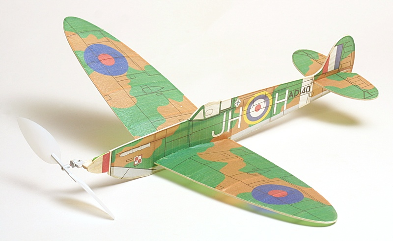
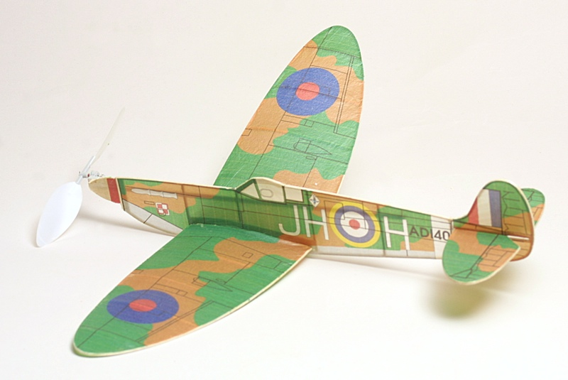

| No-Cal models are a great way to build a simple scale model that offers great endurance potential without eating up endless hours at the workbench. Known for their simple profile fuselages and lightweight construction, No-Cal models can give a convincing illusion of a scale project while floating like an indoor duration model. And with modern computer graphics programs and printers, it is relatively easy to create a model that not only flies great, but also looks the part. |
|  |
|---|
|
Paul Bradley has been championing these models for a while, and offers numerous plans and graphic packages for download on his model web site. Gryffin decided that he wanted to build a Spitfire for the FAC Non-NATS, and Bradley's plan made that an easy project. In addition to the plan, we also downloaded the artwork and printed it on a couple of sheets of Esaki Japanese tissue.
Gryffin made a few changes to the original plan in the interest of durability and ease of construction, and after just a couple building sessions he had the model shown here. The primary changes to the original plan were as follows. First, he replaced the rolled motor tube with a solid 1/8 x 1/4 balsa stick. He also added two more ribs per wing to stiffen the structure and better support the covering. Finally, the flying surface outlines and fuselage "chin" are laminated from two layers of 1/32 x 1/16 balsa to better hold their shape. We purchased the Ikara propeller from Volare Products owner George Bredehoft and made a few test flights while at Geneseo, though didn't fully trim the model before the weekend was over. Gryffin decided going to the pool with Ben was more important after a few hot days in Geneseo, and I can't say I blame him. The Spitfire has suffered a little hangar rash since the summer, but simple repairs have been made and Gryffin's first No-Cal awaits its full potential. |
|  |
|
Specs Weight: | 5.8 grams | Wing Span: | 15.75 inches | Length: | 13.25 inches | Prop: | Ikara 6-inch Indoor | Motor: | tbd | |
Return to Model Index
Copyright 2015, Thayer Syme. All rights reserved